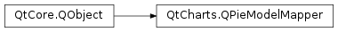

QtCharts.QPieModelMapper¶
Inherited by: QtCharts.QVPieModelMapper, QtCharts.QHPieModelMapper
Note
This class was introduced in Qt 5.7.
Synopsis¶
Functions¶
- def
count() - def
first() - def
labelsSection() - def
model() - def
orientation() - def
series() - def
setCount(count) - def
setFirst(first) - def
setLabelsSection(labelsSection) - def
setModel(model) - def
setOrientation(orientation) - def
setSeries(series) - def
setValuesSection(valuesSection) - def
valuesSection()
Detailed Description¶
-
class
PySide2.QtCharts.QtCharts.QPieModelMapper([parent=nullptr])¶ Parameters: parent – PySide2.QtCore.QObject
-
PySide2.QtCharts.QtCharts.QPieModelMapper.count()¶ Return type: PySide2.QtCore.int
-
PySide2.QtCharts.QtCharts.QPieModelMapper.first()¶ Return type: PySide2.QtCore.int
-
PySide2.QtCharts.QtCharts.QPieModelMapper.labelsSection()¶ Return type: PySide2.QtCore.int
-
PySide2.QtCharts.QtCharts.QPieModelMapper.model()¶ Return type: PySide2.QtCore.QAbstractItemModel
-
PySide2.QtCharts.QtCharts.QPieModelMapper.orientation()¶ Return type: PySide2.QtCore.Qt.Orientation
-
PySide2.QtCharts.QtCharts.QPieModelMapper.series()¶ Return type: PySide2.QtCharts.QtCharts::QPieSeries
-
PySide2.QtCharts.QtCharts.QPieModelMapper.setCount(count)¶ Parameters: count – PySide2.QtCore.int
-
PySide2.QtCharts.QtCharts.QPieModelMapper.setFirst(first)¶ Parameters: first – PySide2.QtCore.int
-
PySide2.QtCharts.QtCharts.QPieModelMapper.setLabelsSection(labelsSection)¶ Parameters: labelsSection – PySide2.QtCore.int
-
PySide2.QtCharts.QtCharts.QPieModelMapper.setModel(model)¶ Parameters: model – PySide2.QtCore.QAbstractItemModel
-
PySide2.QtCharts.QtCharts.QPieModelMapper.setOrientation(orientation)¶ Parameters: orientation – PySide2.QtCore.Qt.Orientation
-
PySide2.QtCharts.QtCharts.QPieModelMapper.setSeries(series)¶ Parameters: series – PySide2.QtCharts.QtCharts::QPieSeries
-
PySide2.QtCharts.QtCharts.QPieModelMapper.setValuesSection(valuesSection)¶ Parameters: valuesSection – PySide2.QtCore.int
-
PySide2.QtCharts.QtCharts.QPieModelMapper.valuesSection()¶ Return type: PySide2.QtCore.int
© 2018 The Qt Company Ltd. Documentation contributions included herein are the copyrights of their respective owners. The documentation provided herein is licensed under the terms of the GNU Free Documentation License version 1.3 as published by the Free Software Foundation. Qt and respective logos are trademarks of The Qt Company Ltd. in Finland and/or other countries worldwide. All other trademarks are property of their respective owners.